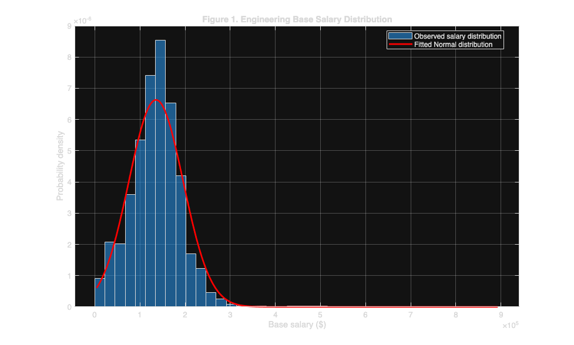

Contents
- ENGS 93 Homework - Part 1
- Question 1: Importing and Summarizing the Dataset
- Question 1: Variable Ranges and Categories
- Question 1: Interpretation
- Question 2: Descriptive Statistics
- Question 2: Interpretation of Descriptive Statistics
- Question 2: Normalized Histogram and Normal Density
- Question 2: Assessment of Normality
- Question 2: Figure Export
- Question 3: Normal Probability Calculations
- Question 3: Interpretation of Salary Probability
- Question 3: Additional Probability for Experience
- Question 3: Interpretation of Experience Probability
- Part 1: Conclusion
ENGS 93 Homework - Part 1
Descriptive Statistics and Normal Probability Distributions Dataset: Engineering Salaries 2021
This analysis introduces the dataset, summarizes its variables, examines the distribution of engineering salaries, and estimates probabilities using a fitted Normal distribution.
clear;
clc;
close all;
Question 1: Importing and Summarizing the Dataset
The Engineering Salaries 2021 dataset contains 10,000 observations and 18 variables. Each observation represents an engineering salary record with information about compensation, professional experience, employment characteristics, and demographic attributes.
The dataset contains both numerical and categorical variables, satisfying the requirements of the assignment. We import the data as a MATLAB table, preserving the original column headers, and examine the observed range or categories of every variable.
% the script's location provides a consistent reference to the % project directory, regardless of each team member's computer. script_dir = fileparts(mfilename('fullpath')); project_root = fileparts(script_dir); % the dataset is stored in a shared folder at the repository root. data_path = fullfile(project_root, 'data', ... 'Engineering_Salaries_2021_10000.csv'); % this check prevents analysis from continuing with a missing dataset. assert(isfile(data_path), ... 'The salary dataset was not found in the data directory.'); % readtable preserves the csv column headers as table variable names. data = readtable(data_path); % matlab's summary function gives an overview of the dataset. disp('Question 1: Dataset Summary'); summary(data); % the table dimensions correspond to observations and variables. num_observations = height(data); num_variables = width(data); fprintf('\nNumber of observations: %d\n', num_observations); fprintf('Number of variables: %d\n', num_variables);
Question 1: Dataset Summary
data: 10000×18 table
Variables:
source_record_id: double
submission_date: datetime
company: cell array of character vectors
engineering_role: cell array of character vectors
company_job_level: cell array of character vectors
specialization: cell array of character vectors
location: cell array of character vectors
education: cell array of character vectors
gender: cell array of character vectors
base_salary: double
annual_bonus: double
annual_stock_value: double
total_annual_compensation: double
years_of_experience: double
years_at_company: double
company_sample_count: double
role_sample_count: double
company_role_sample_count: double
Statistics for applicable variables:
NumMissing Min Median Max Mean Std
source_record_id 0 52794 67839 83874 6.8103e+04 8.8634e+03
submission_date 0 2021-01-01 2021-04-29 2021-08-17 2021-04-30 1560:05:19
company 0
engineering_role 0
company_job_level 0
specialization 0
location 0
education 0
gender 0
base_salary 0 4000 136000 893000 1.3557e+05 6.0185e+04
annual_bonus 0 0 12000 420000 1.7548e+04 2.3225e+04
annual_stock_value 0 0 21000 900000 5.0138e+04 8.1458e+04
total_annual_compensation 0 10000 175000 2372000 203625 1.3707e+05
years_of_experience 0 0 5 40 6.7062 5.5657
years_at_company 0 0 2 40 2.5620 3.2057
company_sample_count 0 1 47 1077 229.1014 340.5069
role_sample_count 0 121 8675 8675 7.6009e+03 2.7491e+03
company_role_sample_count 0 1 29 930 175.5182 281.9470
Number of observations: 10000
Number of variables: 18
Question 1: Variable Ranges and Categories
For numerical variables, the observed range is defined by the minimum and maximum values. Categorical variables do not have meaningful numerical ranges, so their distinct categories are reported instead.
Submission dates are handled separately because they represent a chronological interval rather than a continuous measurement.
% the original variable names allow each column to be inspected % without manually specifying all eighteen variables. variable_names = data.Properties.VariableNames; for i = 1:num_variables variable_name = variable_names{i}; column = data.(variable_name); fprintf('\n%s:\n', variable_name); if strcmp(variable_name, 'submission_date') % the date column may be imported as text or as datetime. if ~isdatetime(column) dates = datetime(string(column), ... 'InputFormat', 'yyyy-MM-dd'); else dates = column; end fprintf(' earliest date: %s\n', ... char(string(min(dates)))); fprintf(' latest date: %s\n', ... char(string(max(dates)))); elseif isnumeric(column) % only finite observations contribute to numerical ranges. valid_values = column(isfinite(column)); if ~isempty(valid_values) fprintf(' minimum: %.2f\n', min(valid_values)); fprintf(' maximum: %.2f\n', max(valid_values)); else fprintf(' no valid numerical observations\n'); end else % unique labels describe the categories present in the data. category_names = unique(string(column)); category_names = category_names( ... ~ismissing(category_names)); fprintf(' number of categories: %d\n', ... numel(category_names)); % a short preview keeps the published report readable. preview_count = min(numel(category_names), 10); for j = 1:preview_count fprintf(' %s\n', char(category_names(j))); end if numel(category_names) > preview_count fprintf(' %d additional categories\n', ... numel(category_names) - preview_count); end end end
source_record_id:
minimum: 52794.00
maximum: 83874.00
submission_date:
earliest date: 2021-01-01
latest date: 2021-08-17
company:
number of categories: 953
10x Genomics
23andMe
2U
3M
7-Eleven
8x8
ABB
ADP
AIG
AMD
943 additional categories
engineering_role:
number of categories: 4
Hardware Engineer
Mechanical Engineer
Software Engineer
Software Engineering Manager
company_job_level:
number of categories: 959
0
006
1
1-2
10
107
109
10R
11
12
949 additional categories
specialization:
number of categories: 461
--
3D Artist
5G
ADAS
AEM
API Development (Back-End)
AR
AR/VR
ARVR
ASIC
451 additional categories
location:
number of categories: 569
Aachen, NW, Germany
Aarhus, AR, Denmark
Aberdeen Proving Ground, MD
Albany, NY
Albuquerque, NM
Aliso Viejo, CA
Allen Park, MI
Alpharetta, GA
American Fork, UT
Ames, IA
559 additional categories
education:
number of categories: 6
Bachelor's Degree
Highschool
Master's Degree
Not reported
PhD
Some College
gender:
number of categories: 4
Female
Male
Not reported
Other
base_salary:
minimum: 4000.00
maximum: 893000.00
annual_bonus:
minimum: 0.00
maximum: 420000.00
annual_stock_value:
minimum: 0.00
maximum: 900000.00
total_annual_compensation:
minimum: 10000.00
maximum: 2372000.00
years_of_experience:
minimum: 0.00
maximum: 40.00
years_at_company:
minimum: 0.00
maximum: 40.00
company_sample_count:
minimum: 1.00
maximum: 1077.00
role_sample_count:
minimum: 121.00
maximum: 8675.00
company_role_sample_count:
minimum: 1.00
maximum: 930.00
Question 1: Interpretation
The dataset contains 10,000 observations and 18 variables, meeting the assignment's requirements for sample size and variable diversity.
The numerical variables include base salary, annual bonus, annual stock value, total annual compensation, years of professional experience, and years at the current company. The dataset also includes identifiers and sample-frequency counts, which are numerical but should not be treated as continuous measurements.
Base salary ranges from $4,000 to $893,000, and total annual compensation ranges from $10,000 to $2,372,000. Annual bonuses range from $0 to $420,000, while annual stock values range from $0 to $900,000.
Years of professional experience and years at the current company both range from 0 to 40 years. The submission dates extend from January 1, 2021, through August 17, 2021.
The categorical variables include company, engineering role, company job level, specialization, location, education, and gender. These variables describe differences among the salary records rather than quantities with minimum and maximum numerical values.
The observed ranges indicate considerable variation in compensation and professional experience. This variation makes the dataset useful for investigating distributions and applying statistical methods.
Question 2: Descriptive Statistics
We selected base salary and years of professional experience for our descriptive statistical analysis.
Base salary represents reported annual salary excluding additional compensation such as bonuses and stock awards. Years of experience measures the reported professional tenure of an engineer.
For each variable, we estimate the mean and sample standard deviation. The mean describes central tendency, while the standard deviation describes the typical spread around the mean.
% the two selected variables are stored separately for clarity. salary = data.base_salary; experience = data.years_of_experience; % non-finite observations are excluded from the calculations. salary = salary(isfinite(salary)); experience = experience(isfinite(experience)); % the mean summarizes the central value of each numerical variable. salary_mean = mean(salary); experience_mean = mean(experience); % matlab's default std function uses n-1 in the denominator, % producing the usual sample standard deviation. salary_std = std(salary); experience_std = std(experience); fprintf('\nQuestion 2: Descriptive Statistics\n'); fprintf('\nBase salary:\n'); fprintf(' mean: $%.2f\n', salary_mean); fprintf(' standard deviation: $%.2f\n', salary_std); fprintf('\nYears of experience:\n'); fprintf(' mean: %.4f years\n', experience_mean); fprintf(' standard deviation: %.4f years\n', experience_std);
Question 2: Descriptive Statistics Base salary: mean: $135574.20 standard deviation: $60185.29 Years of experience: mean: 6.7062 years standard deviation: 5.5657 years
Question 2: Interpretation of Descriptive Statistics
The average base salary in the dataset is $135,574.20, with a sample standard deviation of $60,185.29. This relatively large standard deviation indicates substantial variability in base compensation among the engineering salary records.
The average years of professional experience is 6.7062 years, with a sample standard deviation of 5.5657 years. The substantial variation in experience suggests that the dataset includes individuals at different stages of their engineering careers.
These statistics describe the center and variability of the observed data. However, the mean and standard deviation alone do not indicate whether a variable is Normally distributed. We examine the distribution graphically in the next section.
Question 2: Normalized Histogram and Normal Density
We examine the distribution of annual base salary using a probability-density-normalized histogram.
Unlike a frequency histogram, a density-normalized histogram is scaled so that its total area equals one. This allows a direct comparison with a continuous probability density function.
We construct a Normal distribution using the observed sample mean and sample standard deviation. A close match between the histogram and the fitted curve would suggest approximate Normality.
% a finely spaced salary vector produces a smooth density curve. x = linspace(min(salary), max(salary), 1000); % the normal density is evaluated using the estimated sample % parameters rather than assuming a theoretical mean or variance. normal_pdf = (1 / (salary_std * sqrt(2*pi))) .* ... exp(-0.5 * ((x - salary_mean) ./ salary_std).^2); % the histogram is normalized to probability density so its % scale matches the fitted normal density. fig_salary = figure('Color', 'w'); histogram(salary, 40, ... 'Normalization', 'pdf', ... 'FaceAlpha', 0.6); hold on; % the red curve represents the fitted normal distribution. plot(x, normal_pdf, 'r-', 'LineWidth', 2); xlabel('Base salary ($)'); ylabel('Probability density'); title('Figure 1. Engineering Base Salary Distribution'); legend('Observed salary distribution', ... 'Fitted Normal distribution', ... 'Location', 'best'); grid on; hold off;

Question 2: Assessment of Normality
The observed salary distribution is not approximately symmetric and bell-shaped. Instead, it exhibits positive skewness, with higher salary observations extending the right tail.
The Normal density curve provides a reasonable approximation near the central portion of the distribution, but it does not fully capture the asymmetry or the unusually high salaries.
Therefore, annual base salary is not well described by an exact Normal distribution. The fitted Normal model can still be used as an approximation, but the limitations of this assumption should be considered when interpreting probability estimates, especially in the tails.
Question 2: Figure Export
The completed histogram is saved separately so that it can be included in the team's final report or reviewed outside MATLAB.
% the output path is shared across the project. results_dir = fullfile(project_root, 'results', 'figures'); if ~isfolder(results_dir) mkdir(results_dir); end saveas(fig_salary, ... fullfile(results_dir, 'part1_salary_histogram.png'));
Question 3: Normal Probability Calculations
We use the fitted Normal distribution to estimate the proportion of engineering salaries below a selected threshold of $150,000.
The threshold is standardized using the observed salary mean and standard deviation. The resulting z-score indicates how many standard deviations the selected salary lies above the mean.
The cumulative Normal distribution then gives the probability that a salary is below the selected threshold.
% the salary threshold is an illustrative value within the % observed range of the dataset. salary_threshold = 150000; % the z-score expresses the threshold relative to the mean % and standard deviation of the fitted normal distribution. z_score = (salary_threshold - salary_mean) / salary_std; % the error function evaluates the normal cumulative probability % without requiring the statistics and machine learning toolbox. prob_less = 0.5 * (1 + erf(z_score / sqrt(2))); % the complement gives the probability above the threshold. prob_greater = 1 - prob_less; % the empirical proportion provides a comparison against the % observed dataset rather than the fitted normal model. observed_proportion = mean(salary < salary_threshold); fprintf('\nQuestion 3: Normal Probability\n'); fprintf('Salary threshold: $%.2f\n', salary_threshold); fprintf('Z-score: %.4f\n', z_score); fprintf('P(salary < $%.0f): %.4f\n', ... salary_threshold, prob_less); fprintf('P(salary > $%.0f): %.4f\n', ... salary_threshold, prob_greater); fprintf('Observed proportion below threshold: %.4f\n', ... observed_proportion);
Question 3: Normal Probability Salary threshold: $150000.00 Z-score: 0.2397 P(salary < $150000): 0.5947 P(salary > $150000): 0.4053 Observed proportion below threshold: 0.5992
Question 3: Interpretation of Salary Probability
Using the fitted Normal distribution, the probability that an engineering base salary is below $150,000 is approximately 0.5947, or 59.47%.
The corresponding probability above $150,000 is approximately 0.4053, or 40.53%.
In the observed dataset, 59.92% of salary records fall below $150,000. The difference between the theoretical estimate and the observed proportion is approximately 0.45 percentage points.
This relatively small difference suggests that the fitted Normal model approximates the observed probability reasonably well at the selected threshold. However, agreement at one threshold does not imply that the entire distribution is Normally distributed.
In particular, the positive skewness observed in Question 2 indicates that the model may be less accurate for extreme salaries.
Question 3: Additional Probability for Experience
For comparison, we also estimate the probability that reported professional experience is below 10 years using a Normal distribution fitted to the experience variable.
This second calculation follows the same method as the salary calculation and demonstrates how the procedure applies to another numerical variable.
% the experience threshold is selected within the observed range. experience_threshold = 10; % the standardized experience value is relative to its own % estimated mean and sample standard deviation. experience_z = (experience_threshold - experience_mean) ... / experience_std; % the fitted normal probability is evaluated at ten years. experience_prob_less = 0.5 * ... (1 + erf(experience_z / sqrt(2))); % the observed fraction provides an empirical comparison. experience_observed = mean(experience < experience_threshold); fprintf('\nAdditional experience probability:\n'); fprintf('P(experience < %.0f years): %.4f\n', ... experience_threshold, experience_prob_less); fprintf('Observed proportion: %.4f\n', experience_observed);
Additional experience probability: P(experience < 10 years): 0.7230 Observed proportion: 0.7418
Question 3: Interpretation of Experience Probability
The fitted Normal distribution estimates that approximately 72.30% of the observations have fewer than 10 years of professional experience.
The actual observed proportion is 74.18%. The model therefore underestimates the observed proportion by approximately 1.88 percentage points.
As with salary, this difference reflects the limitations of representing the empirical distribution with a fitted Normal model. The model-based probabilities are approximations rather than exact descriptions of the observed data.
Part 1: Conclusion
Part 1 established an initial statistical understanding of the Engineering Salaries 2021 dataset.
The descriptive statistics reveal substantial variation in annual base salary and professional experience. The histogram shows that base salary is positively skewed rather than approximately Normal.
Although the fitted Normal model does not reproduce the entire salary distribution, it provides a useful approximation for estimating probabilities at selected thresholds.
These findings provide a foundation for the confidence interval estimation and hypothesis testing conducted in Part 2.
fprintf('\nPart 1 analysis complete.\n');
Part 1 analysis complete.